Community Board
Your central hub for server features — press Alt+B in-game to open it.
The Community Board is a custom in-game panel that gives access to all of Kairos's
extended features from one place. Open it at any time by pressing Alt+B.
The left-hand menu lists every available section — click any entry to navigate to it.
Sections
Server Tools
Detailed documentation for Server Tools will be added here.
Faction War
Faction War is a simple server-wide competition between two factions. Choose a side, contribute to help it grow, and earn powerful rewards as your faction levels up.
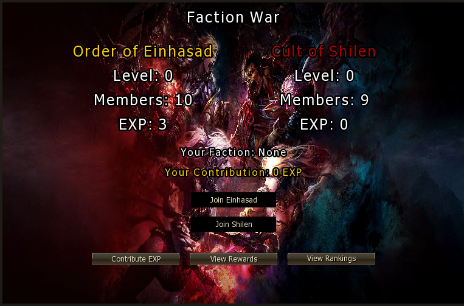
The Two Factions
| Faction | Description |
|---|---|
| Order of Einhasad | The faction of light — join to fight under Einhasad's banner. |
| Cult of Shilen | The faction of darkness — join to serve under Shilen's power. |
Only the leading faction receives the buff. Join the faction with fewer members to help keep competition fair.
How It Works
- Open the Community Board (
Alt+B) and select Faction War. - Click Join Einhasad or Join Shilen to pick your faction.
- Contribute Gold Bars using the Contribute EXP button to increase your faction's experience.
- As the faction's level rises, members receive new items and rewards.
- The faction in the lead earns the Faction Leader passive buff for all its members.
Faction Leader Buff
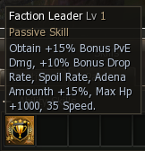
| Stat | Bonus (Lv 1) |
|---|---|
| PvE Damage | +15% |
| Drop Rate | +10% |
| Spoil Rate | +10% |
| Adena Amount | +15% |
| Max HP | +1,000 |
| Speed | +35 |
Rewards & Rankings
| Button | Action |
|---|---|
| Contribute EXP | Spend Gold Bars to add EXP to your faction's total. |
| View Rewards | See the items unlocked at each faction level. |
| View Rankings | Check top contributors across both factions. |
Buffer
The Buffer lets you build a personal buff scheme — a saved list of buffs that can be applied to your character with a single click. No NPC hunting required once your scheme is set up.
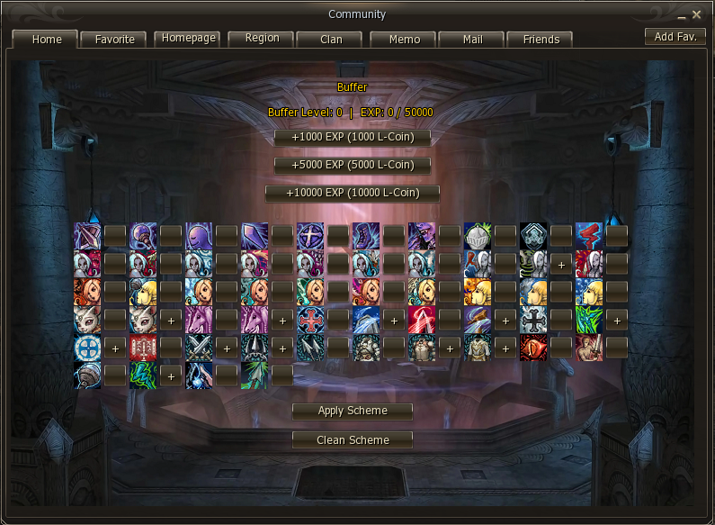
How It Works
- Open the Community Board (
Alt+B) and select Buffer from the left menu. - Browse the buff groups — each column represents a category (combat, support, etc.).
- Click the + button next to any buff to add it to your saved scheme.
- Click Apply Scheme to instantly cast all saved buffs on your character.
- Your scheme is saved per character and persists between sessions — set it up once and reuse it anytime.
Applying and Clearing
| Button | What it does |
|---|---|
| Apply Scheme | Applies all buffs in your scheme to your character. |
| Clean Scheme | Removes all buffs from your saved scheme (does not remove active buffs). |
Buffer Level & Progression
| EXP Gain | L-Coin Cost |
|---|---|
| +1,000 EXP | 1,000 L-Coin |
| +5,000 EXP | 5,000 L-Coin |
| +10,000 EXP | 10,000 L-Coin |
Buffer leveling is locked until approximately 150 Rebirths are completed.
L-Coin
L-Coin drops from regular mobs, raid and world bosses, and seasonal events.
Tarot Cards
Tarot Cards is a system that lets players open card packs to obtain enchants, random items, and most importantly — pieces for the Doll System and Relics.
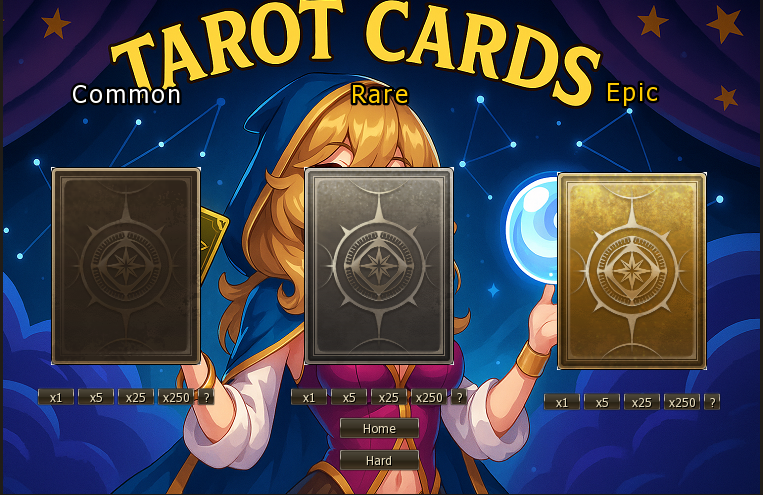
Card Grades
Both boss pools share the same three grades. The boss type determines what you get — grade affects the quality of extras alongside the main reward:
| Grade | Normal Bosses → Dolls | Hard Bosses → Relics |
|---|---|---|
| Common | Doll pieces + basic items | Relic pieces + basic items |
| Rare | Doll pieces + equipment enchants | Relic pieces + equipment enchants |
| Epic | Doll pieces + top enchants & special rewards | Relic pieces + top enchants & special rewards |
Where Cards Drop & What They Give
Cards are split into two pools by boss difficulty. Use the Home and Hard tabs in the panel to switch between them:
| Tab | Boss Type | Cards Available | All Grades Reward |
|---|---|---|---|
| Home | Normal Bosses | Common Normal, Rare Normal, Epic Normal | Doll pieces |
| Hard | Hard Bosses | Common Hard, Rare Hard, Epic Hard | Relic pieces |
Normal boss cards (all grades) → Dolls.
Hard boss cards (all grades) → Relics.
Higher grade cards within the same pool give better enchants and extra items alongside the Doll or Relic piece.
Opening Cards
Each card grade supports bulk opening. Select the amount before opening:
| Option | Cards Opened |
|---|---|
| x1 | Single card |
| x5 | 5 cards at once |
| x25 | 25 cards at once |
| x250 | 250 cards at once |
Click the ? button next to any card grade to preview the full reward table before opening — useful for planning which boss type to farm.
Special Rewards
Beyond Doll and Relic pieces, Tarot Cards can yield:
- Weapon enchant scrolls — upgrade your weapon's enchant level
- Armor enchant scrolls — upgrade your armor's enchant level
- Various other items depending on card grade and current event pool
Doll pieces obtained from Normal card packs are used in the Doll System. Epic card pieces feed into Relics. Both grant powerful passive bonuses.
Noblesse
Noblesse status is required to unlock the SP conversion skill needed for Rebirth. Obtain it through the Noblesse Manager NPC in Giran by providing a Caradine's Letter.
| Item | How to Obtain |
|---|---|
| Caradine's Letter | Farm crafting materials in the Vesper Noble Zone — spoil/sweep mobs for free drops, or obtain via donation |
Spoiling mobs in the Vesper Noble Zone is the free route. A full Noblesse guide with mob locations and exact material drops will be added soon.
Rebirth
The Rebirth system resets your character back to level 1 in exchange for a Rebirth Point — a permanent currency used to unlock and upgrade a large pool of custom passive skills. Rebirths also serve as a hard requirement in several other systems (such as the Buffer level-up). Accumulating rebirths is one of the most important long-term progressions on Kairos.
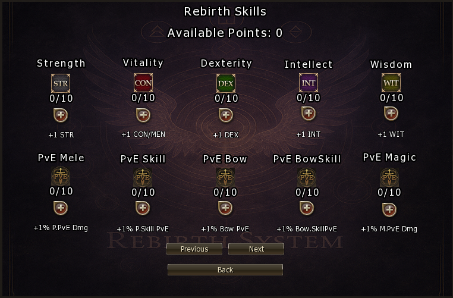
Requirements
| Condition | Detail |
|---|---|
| Level | Must be level 85 to perform a Rebirth |
| Gold Bars (GB) | Cost scales with each rebirth — see table below |
| SP Scrolls | Cost scales with each rebirth — see table below |
Scaling Cost
Each consecutive rebirth costs more. The cost equals the rebirth number in both Gold Bars and SP Scrolls:
| Rebirth # | Gold Bars | SP Scrolls |
|---|---|---|
| 1st | 1 GB | 1 SP Scroll |
| 2nd | 2 GB | 2 SP Scrolls |
| 3rd | 3 GB | 3 SP Scrolls |
| Nth | N GB | N SP Scrolls |
SP Scrolls
SP Scrolls are crafted by converting SP points using a special skill unlocked upon becoming Noblesse:
- Rate: 1,000,000,000 SP (1 billion) = 1 SP Scroll
- Cooldown: 1 minute per conversion
Farm SP-heavy zones and let it accumulate before converting. Stock up before your next rebirth.
Rebirth Skills
Each Rebirth Point can be spent in the Rebirth Skills panel. There are over 40 skills across multiple pages — stat bonuses and PvE damage modifiers:
| Category | Skills | Bonus per Level | Max Levels |
|---|---|---|---|
| Strength | STR | +1 STR | 10 |
| Vitality | CON | +1 CON / MEN | 10 |
| Dexterity | DEX | +1 DEX | 10 |
| Intellect | INT | +1 INT | 10 |
| Wisdom | WIT | +1 WIT | 10 |
| PvE Melee | P.PvE Dmg | +1% Physical PvE Dmg | 10 |
| PvE Skill | P.Skill PvE | +1% Skill PvE Dmg | 10 |
| PvE Bow | Bow PvE | +1% Bow PvE Dmg | 10 |
| PvE BowSkill | Bow SkillPvE | +1% Bow Skill PvE Dmg | 10 |
| PvE Magic | M.PvE Dmg | +1% Magic PvE Dmg | 10 |
Use the Previous / Next buttons in the panel to browse all available skill pages — there are over 40 skills in total.
Raid Teleport
Detailed documentation for Raid Teleport will be added here.
Collection
Collection is one of the most important long-term systems in Kairos. As your character progresses through gear tiers you will need to continuously revisit the Collection system — farming materials from multiple zones, enchanting specific items, and completing sets to earn permanent stat boosts that compound over time.
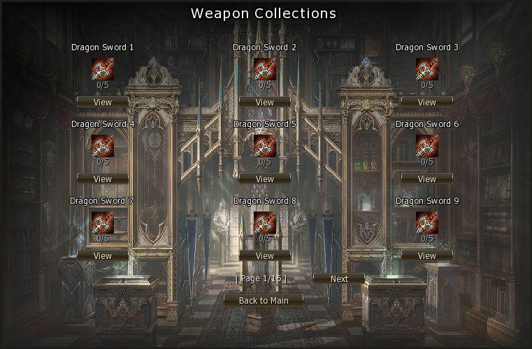
How It Works
Each collection entry requires you to submit a set of specific items. Some items must be enchanted to a minimum level (e.g. +3) before they qualify — check the View button on each entry for exact requirements.
- Open the Community Board (
Alt+B) and select Collection. - Browse the categories — Weapons, Armors, Jewels, and more.
- Click View on any entry to see the required items and enchant levels.
- Farm and enchant the required materials, then submit them to complete the collection.
- Every 5 completed collections the system levels up and grants a passive stat boost.
Rewards
| Milestone | Reward |
|---|---|
| Every 5 collections completed | System level-up + permanent passive stat improvement |
| Individual collection completed | Counts toward the next level-up milestone |
Do not try to complete collections all at once early on — the material and enchant requirements scale with gear tier. Progress collections naturally as you upgrade your equipment. Each new gear tier will unlock new collection entries requiring better-enchanted versions of the items you're already using.
Categories
Collections are grouped by item type. You will need to farm materials across multiple zones as you progress:
| Category | Focus |
|---|---|
| Weapons | Weapons at various enchant levels from different gear tiers |
| Armors | Armor pieces and sets, some requiring enchantment |
| Jewels | Accessories and jewelry from progressive zones |
Treat Collection as a permanent side activity — every time you upgrade a piece of gear, check if the old version (possibly enchanted) completes a collection entry before discarding it. The passive stat bonuses add up significantly over hundreds of completed entries.
Alchemy
Detailed documentation for the Alchemy system will be added here.
Champion System
The Champion System is a unique Kairos feature that lets you control how difficult champion-tier mobs are — and how rewarding they become. You choose the champion level; the server applies it to champions throughout every zone you hunt in.
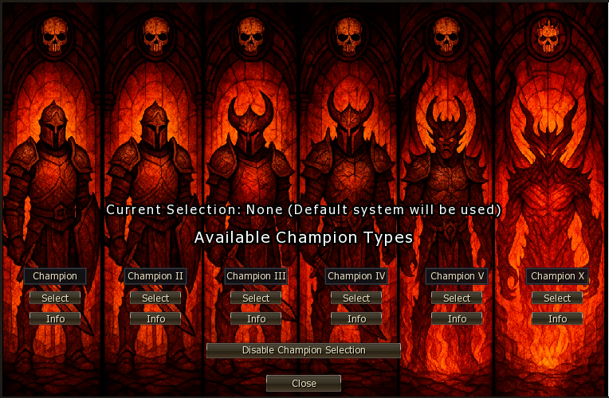
Champion Tiers
There are six tiers to choose from. Each step up increases champion stats and rewards:
| Tier | Difficulty Increase | Reward Increase |
|---|---|---|
| Champion | Baseline champion — mild increase over normal mobs | Low bonus |
| Champion II | Noticeably tougher HP, damage, and defense | Moderate bonus |
| Champion III | Significant stat increase — requires solid gear | Good bonus |
| Champion IV | Hard — high HP, high damage, fast attack speed | High bonus |
| Champion V | Very hard — challenging even for well-geared players | Very high bonus |
| Champion X | Extreme — maximum stats, maximum challenge | Maximum bonus |
How to Use It
- Open the Community Board (
Alt+B) and select Champion Hard. - Click Info on any tier to preview its stat modifiers and rewards.
- Click Select on the tier you want to activate.
- To revert to the server default, click Disable Champion Selection.
Your champion level applies across all zones — including more advanced ones you move into as you progress. If you push to a higher zone and find champion mobs too difficult to kill, lower your champion tier until your gear catches up. Never sacrifice efficient farming trying to brute-force a tier that's above your current power level.
Set the highest champion tier where you can kill champions comfortably without dying. As you improve your gear and rebirths, push the tier up one step at a time to maximise rewards without losing efficiency.
MultiSkill
MultiSkill lets you learn passive and active skills from any retail class in the game, as well as exclusive Custom Skills unique to Kairos. Skills are organised by class and grouped into progression tiers — the higher the tier, the stronger the skill and the rarer the material required.
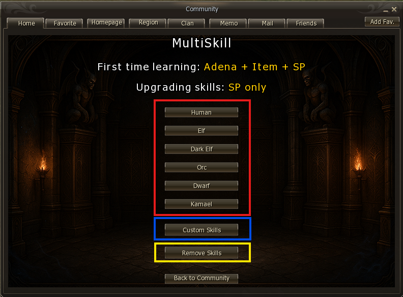
First time learning a skill: Adena + Class Stone + SP
Upgrading an existing skill: Adena + SP only — no stone needed.
Retail Classes
All retail classes are available and grouped by their class-change tier. Each tier requires a specific Class Stone to unlock the first level of any skill in that group. Stones drop from monsters in the corresponding farming zones.
| Tier | Class Change | Level Requirement | Stone Required |
|---|---|---|---|
| Tier 1 | Starting Classes | — | Class Stone I |
| Tier 2 | 1st Class Change | Level 20 | Class Stone II |
| Tier 3 | 2nd Class Change | Level 40 | Class Stone III |
| Tier 4 | 3rd Class Change | Level 76 | Class Stone IV |
Want to learn the Orc Shaman Weapon Mastery skill? It's a starting-class skill — grab a Class Stone I from a low-level farming zone, open MultiSkill, find the Orc class, and learn it. Subsequent level upgrades cost Adena + SP only. See Getting Started — Mana Fix for a walkthrough.
Custom Skills
At the bottom of the MultiSkill panel sits the Custom Skills section — a set of exclusive skills available only on Kairos. These follow the same learning pattern as retail skills but use a rarer material obtained in higher-level zones.
| Property | Details |
|---|---|
| Stone Required | Class Stone V — drops in higher-level farming zones |
| First Unlock | Adena + Class Stone V + SP |
| Level Upgrades | Adena + SP only (no additional stone) |
| Skill Type | All custom skills are passive |
| Enchanting | Supported — use the standard Lineage 2 skill enchantment system |
All Custom Skills are passive — they work automatically once learned with no activation needed. They can also be enchanted using the standard L2 skill enchantment system, making them significantly stronger at higher enchant levels.
Tatto Master
Tatto Master is a system of passive skills that permanently improve your character's stats. Skills are activated by obtaining the required materials and registering them in the system — no active casting needed once learned.
There are 4 pages of tattoos covering a wide range of bonuses. Some are learned once and stay at a fixed level; others can be upgraded progressively as you reach higher zones and content.
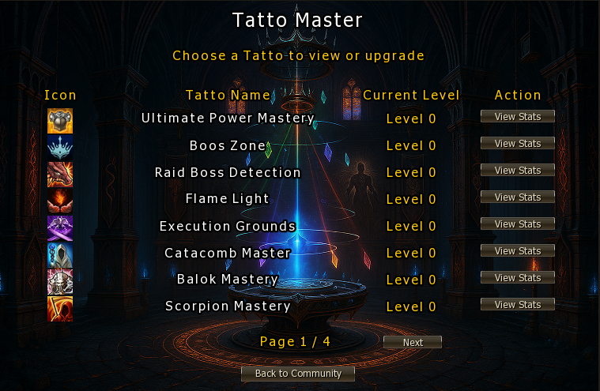
How It Works
- Open the Community Board (
Alt+B) and select Tatto Master. - Browse the 4 pages of available tattoos using the Next button.
- Click View Stats on any tattoo to see what it does and what materials it requires.
- Farm the required materials and return to register the tattoo — the passive activates immediately.
- For upgradeable tattoos, repeat with higher-tier materials to increase the level.
Tattoo Types
| Type | Description |
|---|---|
| Single Learn | Learned once — fixed passive bonus, no upgrade path |
| Progressive | Can be upgraded through multiple levels — each level requires better materials and grants a stronger bonus |
Material Sources
Tattoo materials come from a variety of content — the harder the source, the stronger the tattoo it unlocks:
| Source | Examples |
|---|---|
| Farming Zones | Regular mob drops as you progress through zones |
| Instances | Instanced dungeon runs |
| Catacombs | Catacomb-specific mob drops |
| Special Raid Events | Event raid bosses and seasonal content |
Known Tattoos (Page 1)
| Tattoo Name | Focus |
|---|---|
| Ultimate Power Mastery | General power increase |
| Boos Zone | Boss zone performance |
| Raid Boss Detection | Raid boss encounters |
| Flame Light | Offensive stat boost |
| Execution Grounds | Execution Grounds zone content |
| Catacomb Master | Catacomb zone performance |
| Balok Mastery | Balok raid encounter |
| Scorpion Mastery | Scorpion zone content |
Page 1 of 4 is shown above. Use the Next button in the panel to browse the remaining tattoos — full details available via the View Stats button on each entry.
Prioritise tattoos that match the content you are actively farming. If you spend a lot of time in catacombs, unlock Catacomb Master first. As you move into harder zones and instances, unlock and upgrade the relevant tattoos to stay efficient.
Player Difficulty
The Difficulty System lets you voluntarily handicap your character in exchange for greater rewards. Similar to the Champion System, you choose the level of challenge — the harder you make it on yourself, the more you earn. There are 10 difficulty levels, each unlocked by reaching a specific Rebirth count.
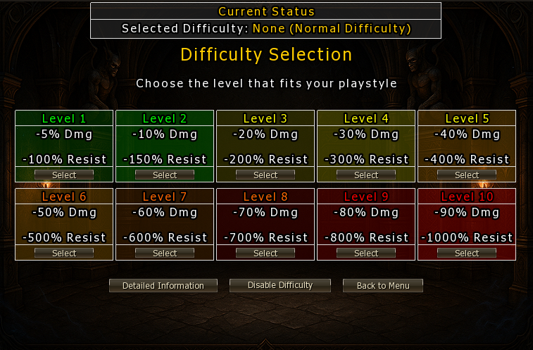
Difficulty Levels
Each level applies penalties to your character's damage output and resistances. Higher levels are progressively more punishing — but the rewards scale to match:
| Level | Dmg Penalty | Resist Penalty | Rebirths Required |
|---|---|---|---|
| Level 1 | -5% Dmg | -100% Resist | 0 |
| Level 2 | -10% Dmg | -150% Resist | 1 |
| Level 3 | -20% Dmg | -200% Resist | 3 |
| Level 4 | -30% Dmg | -300% Resist | 5 |
| Level 5 | -40% Dmg | -400% Resist | 10 |
| Level 6 | -50% Dmg | -500% Resist | 15 |
| Level 7 | -60% Dmg | -600% Resist | 25 |
| Level 8 | -70% Dmg | -700% Resist | 40 |
| Level 9 | -80% Dmg | -800% Resist | 30 |
| Level 10 | -90% Dmg | -1000% Resist | 100 |
Each difficulty level is locked behind a Rebirth requirement. You cannot select a higher level until you have completed the required number of rebirths — difficulty and character progression are intentionally linked.
Rewards & Detailed Stats
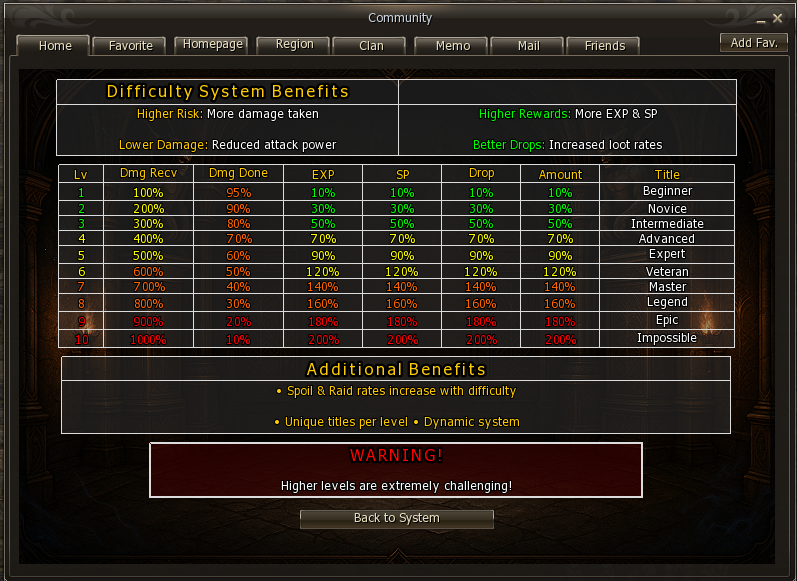
How to Use It
- Open the Community Board (
Alt+B) and select Player Difficulty. - Check your current Rebirth count — only levels you have unlocked will be available.
- Click Detailed Information to preview the full penalty and reward breakdown per level.
- Click Select on the level you want to activate.
- To remove the handicap, click Disable Difficulty.
Your difficulty level applies across all zones — including more advanced ones you move into as you progress. If you push to a higher zone and find yourself dying or unable to farm efficiently, lower your difficulty level until your gear and rebirths catch up. Never sacrifice farming efficiency trying to hold a difficulty tier that's above your current power level.
Run the highest difficulty level where you can still farm efficiently. As you complete more rebirths and your gear improves, push the level up one step at a time — the reward gains compound quickly at higher levels.
Guardians
Guardians are powerful companions that fight alongside you. Each character can have up to three guardians — one of each type — but only one guardian can be active at a time. You choose which guardian to deploy based on your current needs.
Guardian progress is permanent: switching your active guardian never resets the levels of the others. Every guardian you have leveled stays at that level until you level it further.
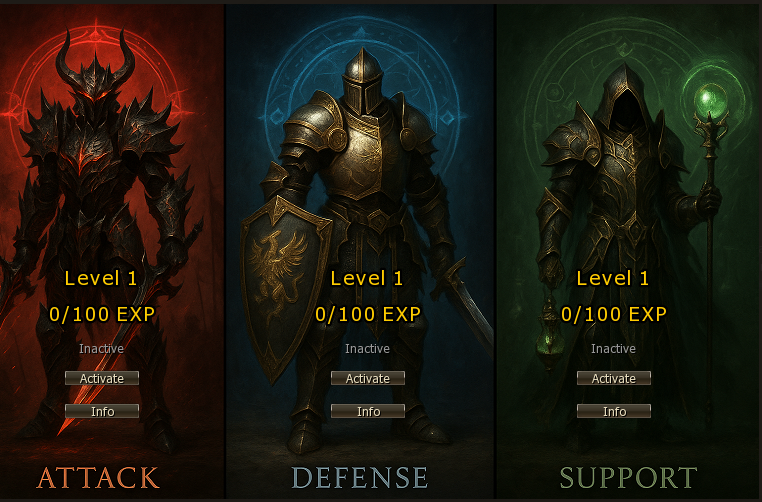
Guardian Types
| Type | Role | Best For |
|---|---|---|
| Attack | Offensive companion — focuses on dealing damage to enemies. | Boosting kill speed during solo grinding. |
| Defense | Protective companion — increases your survivability. | Tanking tougher zones or boss fights. |
| Support | Utility companion — provides buffs and healing assistance. | Sustaining long farming sessions or group play. |
Leveling Your Guardian
- Gain EXP automatically — guardian EXP accumulates passively over time while you are online and farming. No manual action required.
- Reach the EXP threshold — each guardian displays its current EXP progress (e.g. 0 / 100). Once the bar fills, the guardian is ready to level up.
- Pay Gold Bars (GB) — leveling up costs Gold Bars. The cost scales with the guardian's current level.
- Enjoy stronger stats — each level increases the guardian's contribution to your combat effectiveness.
Upgrade Costs
| Level | EXP Required | Gold Bars (GB) |
|---|---|---|
| 1 → 2 | 100 | — |
| 2 → 3 | 150 | 15 |
| 3 → 4 | 210 | TODO: add remaining levels |
You can freely switch between your three guardians at any time using the Activate button in the Guardian panel. The previously active guardian becomes inactive but retains its level — there is no penalty for switching.
Gold Bars (GB) are the premium currency used to upgrade guardians. They can be earned through gameplay — convert Adena to GB using the GM Shop > Consumables.
Dolls
Detailed documentation for the Doll system will be added here. Doll pieces are obtained by opening Normal boss Tarot Cards — see Tarot Cards.
Relics
Detailed documentation for the Relics system will be added here. Relic pieces are obtained by opening Hard boss Tarot Cards — see Tarot Cards.
Compound
Detailed documentation for the Compound system will be added here.
Pets
Detailed documentation for the Pets system will be added here.
Skinning
Detailed documentation for the Skinning system will be added here.
Torment
Detailed documentation for the Torment system will be added here.